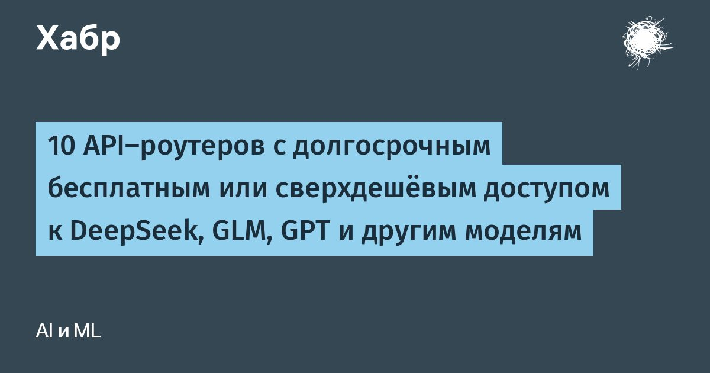

10 API-роутеров с долгосрочным бесплатным или сверхдешёвым доступом к DeepSeek, GLM, GPT и другим моделям
Собрал 10 API-роутеров, у которых есть бесплатные модели, ежедневные квоты или стартовые бонусы, и проверил каждый после регистрации: какие модели доступны бесплатно или почти бесплатно, какие действуют лимиты и работают ли вызовы через API.
Отдельно смотрел, есть ли русский интерфейс, можно ли платить в рублях и открывается ли сайт из России без VPN.
В подборке OrcaRouter, TeamoRouter, Srazu, RockAPI, OpenRouter, llmgw, VseGPT, Token Harbor, NaraRouter и FreeRouter.
Внутри — две сводные таблицы и 17 скриншотов из личных кабинетов.
Читать далее